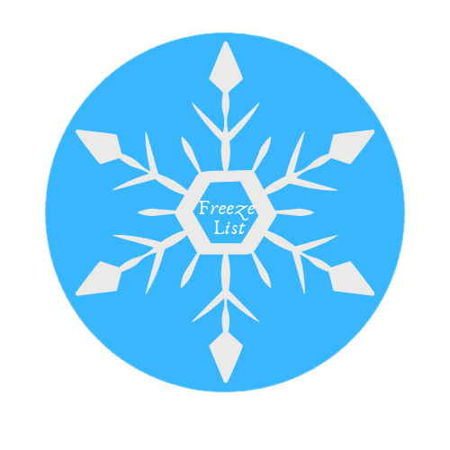

Freeze List
Freeze list will let you organize all Blogs you want to read later.You can keep track of blogs you have completed and the blogs you have to complete.You can mark the blog complete if it is done.Sometimes there is a list of websites/blogs you are going through and that are to be completed in particular time, but don't want to bookmark them,then you can use this extension to save the list of blogs.